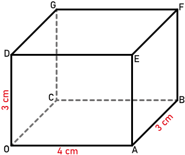
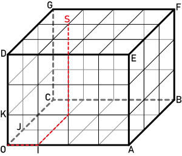
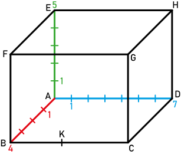

|
Chapitre 20
|
- Repérage dans l'espace
|
Activité Introduction
On se propose de repérer des points dans un parallélépipède rectangle OABCDEFG tel que :
-
Pour cela, on munit la face OABC d'un repère (O; I, J) avec :
- I point de l'arête [OA] tel que OI = 1cm,
- J point de l'arête [OC] tel que OJ = 1cm.
Lire les coordonnées des points I, J, A, C, B.
-
On munit l'arête [OD] d'un repère (O; K) avec OK = 1cm.
On dit que le parallélépipède est muni d'un repère (O; I, J, K). Pour lire les coordonnées d'un
point dans ce repère, on ajoute une troisième coordonnée, appelée altitude.
Par exemple : S(1; 2; 3)
Lire, dans ce repère, les coordonnées des points D, G, F, E, A, B, C.
-
Reproduire ce parallélépipède rectangle et placer le point T(3; 1; 2).


Repérage sur le pavé droit :
Dans un parallélépipède rectangle, on forme un repère à partir
d'un sommet et des trois arêtes qui en sont issues.
On repère alors un point par trois nombres, ses coordonnées :
l'abscisse, l'ordonnée et l'altitude.
Exemple :

On considère le repère de centre A.
Dans ce pavé droit, le point C a pour coordonnées (4 ; 7 ; 0).
Le point G a pour coordonnées (4 ; 7 ; 5).
Le point K milieu de [BC] a pour coordonnées (4 ; 3,5 ; 5).
Sections de solides :
Une section d'un solide est la figure obtenue par intersection entre ce solide et un plan.
Cube et parallélépipède rectangle :
Propriétés :
-
La section d'un cube par un plan parallèle à l'une de ses faces
est un carré de même dimension que cette face.
-
La section d'un parallélépipède rectangle par un plan parallèle
à l'une de ses faces est un rectangle de même dimension que cette face.
Cylindre :
Propriétés :
-
La section d'un cylindre de révolution par un plan parallèle à sa base
est un disque identique au disque de base.
-
La section d'un cylindre de révolution par un plan perpendiculaire à sa base
est un rectangle.
Cône :
Propriété :
La section d'un cône de révolution par un plan parallèle à sa base
est un disque réduction du disque de base.
Pyramide :
Propriété :
La section d'une pyramide par un plan parallèle à sa base
est un polygone réduction du polygone de base.
Boule :
Propriété :
La section d'une boule par un plan
est un disque.